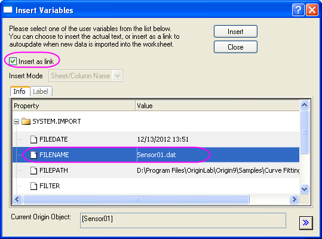
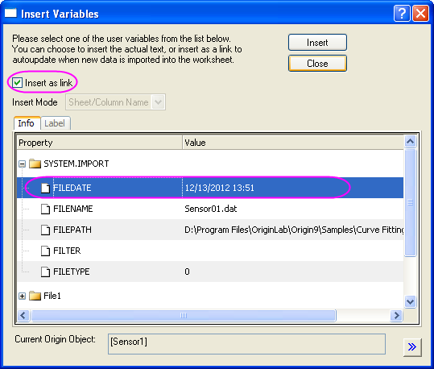
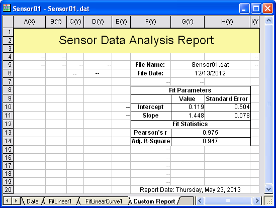
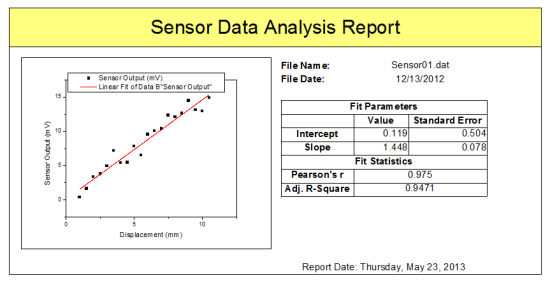

Ein benutzerdefiniertes Berichtsblatt erstellen
Create-Custom-Report
Zusammenfassung
Arbeitsblätter in Origin können benutzerdefiniert angepasst werden, indem Zellen verbunden und verschiedene Objekte wie Diagramme, externe Bilder, Links zu Variablen und Tabellen/Zellen in anderen Blättern platziert werden, um benutzerdefinierte Berichte zu erstellen.
Dieses Tutorial erläutert, wie Sie einen benutzerdefinierten Bericht zu einer vorhandenen Analysevorlage hinzufügen. Sie können die neuen Daten dann importieren, Ergebnisse neu berechnen und exportieren oder den benutzerdefinierten Bericht drucken.
Origin-Version mind. erforderlich: Origin 9.0 SR0
Was Sie lernen werden
- Ein benutzerdefiniertes Berichtsblatt erstellen
- Einen benutzerdefinierten Bericht als Teil der Analysevorlage (OGW) speichern und mit neuen Daten erneut verwenden
Schritte
Hinweis: Beenden Sie zuerst das vorherige Tutorial "Analysevorlagen erstellen und verwenden", in dem eine Analysevorlage mit dem Namen MeineSensordaten.OGWU erstellt wird.
Daten importieren
- Legen Sie über das Menü Datei: Öffnen den Dateityp auf Arbeitsmappen (*.ogwu) fest. Navigieren Sie dann zu der Analysevorlage MeineSensordaten.OGWU und öffnen Sie sie. Diese Analysevorlage wurde mit einer linearen Anpassung für die Spalte B des ersten Arbeitsblatts und einem benutzerdefinierten eingebetteten Diagramm mit den Daten und der linearen Anpassungslinie gespeichert (beachten Sie, dass Vorlagen keine Daten enthalten, d.h., zu diesem Zeitpunkt sehen Sie weder Daten noch Ergebnisse).
- Aktivieren Sie das Arbeitsblatt Daten. Wählen Sie Hilfe: Ordner öffnen: Sample-Ordner ... im Menü, um den Ordner "Samples" zu öffnen. Öffnen Sie in diesem Ordner den Unterordner Curve Fitting. Dort befindet sich die Datei Sensor01.dat. Ziehen Sie diese Datei per Drag&Drop in das Arbeitsblatt Daten, um sie zu importieren.
Ein benutzerdefiniertes Berichtsblatt erstellen
- Klicken Sie mit der rechten Maustaste auf das Arbeitsblatt Daten und wählen Sie Hinzufügen, um ein neues Arbeitsblatt hinzuzufügen. Benennen Sie dieses Arbeitsblatt in Benutzerdefinierten Bericht um.
- Aktivieren Sie das Blatt Benutzerdefinierter Bericht und wählen Sie Format: Worksheet (oder drücken Sie F4), um den Dialog Arbeitsblatteigenschaften zu öffnen. Gehen Sie zur Registerkarte Größe und legen Sie im Knoten Größe die Zeilenanzahl mit 20 und die Spaltenanzahl mit 9 fest. Wechseln Sie zur Registerkarte Verschiedenes und aktivieren Sie das Kontrollkästchen Automatisches Hinzufügen von Zellen. Klicken Sie auf OK, um diese Einstellungen anzuwenden und den Dialog zu schließen.
- Klicken Sie in dem Arbeitsblatt auf die Kopfzeilen Langname, Einheit, Kommentare sowie F(x)= und fahren Sie mit gedrückter Maustaste über sie, um diese vier Zeilen zu markieren. Klicken Sie dann mit der rechten Maustaste und wählen Sie Verbergen im Kontextmenü aus. Dies verbirgt die vier Zeilen im Arbeitsblatt.
- Markieren Sie den Bereich der Zellen in den ersten drei Zeilen für alle Spalten und klicken Sie auf die Schaltfläche Zellen zusammenfügen
 , die sich auf der Symbolleiste Stil befindet, um die Zellen zusammenzufügen. Geben Sie den Text Analysebericht der Sensordaten in dieser zusammengefügten Zelle ein.
, die sich auf der Symbolleiste Stil befindet, um die Zellen zusammenzufügen. Geben Sie den Text Analysebericht der Sensordaten in dieser zusammengefügten Zelle ein.
- Fügen Sie in der 5. Zeile die Zellen in den Spalten G und H zusammen. Wiederholen Sie dies bei der 6. Zeile. Geben Sie in Zeile 5, Spalte F, den Text Dateiname: und in Zeile 6, Spalte F den Text Dateidatum: ein.
- Klicken Sie mit der rechten Maustaste auf die zusammengefügten (Spalte G und H) Zellen in Zeile 5 und wählen Sie Variable einfügen im Kontextmenü. Stellen Sie sicher, dass die Dialogeinstellungen aussehen wie in dem Bild unten und fügen Sie die Variable FILENAME in diese Zelle ein.
- 
- Klicken Sie mit der rechten Maustaste auf die zusammengefügten (Spalte G und H) Zellen in Zeile 6 und wählen Sie Variablen einfügen im Kontextmenü. Fügen Sie die Variable FILEDATE ein und nehmen Sie dabei die Einstellungen aus dem Bild unten vor:
- 
- Klicken Sie mit der rechten Maustaste auf die Zelle, die Dateninformationen enthält, und wählen Sie Zellen formatieren im Kontextmenü. Legen Sie in der Auswahlliste Format die Option Datum fest und klicken Sie auf OK.
- Gehen Sie zu dem Arbeitsblatt FitLinear1 und darin zur Tabelle Parameter. Klicken Sie auf die dreieckige Schaltfläche neben der Tabelle und wählen Sie im Ausklappmenü Tabelle kopieren.
- Wechseln Sie zum Blatt Benutzerdefinierten Bericht und markieren Sie die 9. Zeile in Spalte E. Klicken Sie mit der rechten Maustaste und wählen Sie Link einfügen. Löschen Sie den eingefügten Text Sensorausgabe in Spalte E, indem Sie auf die Taste Entfernen drücken.
- Fügen Sie in der 13. Zeile die Zellen in den Spalten G und H zusammen. Tun Sie dasselbe in der 14. Zeile.
- Kehren Sie zu Blatt FitLinear1 und der Tabelle Statistik zurück und wählen Sie zwei Datenzellen für Pearsons r und das Korr. R-Quadrat. Klicken Sie mit der rechten Maustaste und wählen Sie Kopieren, um diese zwei Zellen zu kopieren.
- Gehen Sie zu dem Blatt Benutzerdefinierter Bericht und markieren Sie die zusammengefügte Zelle in der 13. Zeile. Klicken Sie mit der rechten Maustaste darauf und wählen Sie Link einfügen. Die zwei zusammengefügten Zellen werden mit den entsprechenden Werten gefüllt. Geben Sie den Text Pearsons r und Korr. R-Quadrat in die Zellen links von diesen eingefügten Werten ein.
- Fügen Sie in der 8. Zeile die drei Zellen in den Spalten F, G und H zusammen. Tun Sie dasselbe in Zeile 12 und 20. Geben Sie den Text Anpassungsparameter, Fitstatistik und Berichtsdatum: $(@D, D1) in den Zeilen 8, 12 bzw. 20 ein.
- Klicken Sie mit der rechten Maustaste auf die zusammengefügten Zellen in Zeile 20 und wählen Sie Stil der Daten festlegen: Rich Text im Kontextmenü. Durch die Aktivierung von Rich Text wird die Zeichenkette $(@D,D1) als das tatsächliche Systemdatum angezeigt.
- Halten Sie die Strg-Taste gedrückt und markieren Sie alle Zellen mit numerischen Werten. Klicken Sie dann mit der rechten Maustaste und wählen Sie Zellen formatieren im Kontextmenü. Wählen Sie Setze Dezimalstellen= in der Auswahlliste Stellen und geben Sie 3 als Dezimalzahl an. Klicken Sie auf OK.
- Ändern Sie mit Hilfe der Schaltflächen auf den Symbolleisten Stil und Format die Zellenränder, die Schriftgrößen, die Stile und Farben, um den Bericht so wie im Bild unten benutzerdefiniert anzupassen. Möglicherweise müssen Sie auch manuell die Breite der Spalten anpassen, um sicher zu stellen, dass der ganze Text angezeigt wird.
- 
- Wechseln Sie zum Blatt FitLinear1 und klicken Sie doppelt auf das Diagramm unter Angepasstes Kurvendiagramm, um das eingebettete Diagramm zu öffnen. Klicken Sie mit der rechten Maustaste auf die Titelleiste des Diagramms und wählen Sie Duplizieren im Kontextmenü, um das Diagrammfenster (Graph1) zu duplizieren. Klicken Sie doppelt auf die Achse des duplizierten Diagramms, um den Dialog Achsen zu öffnen. Gehen Sie unter X-Achse und Y-Achse zur Registerkarte Skalierung und wählen Sie Auto in der Auswahlliste Neu skalieren. Schließen Sie das ursprüngliche eingebettete Diagrammfenster.
- Kehren Sie zurück zum Arbeitsblatt Benutzerdefinierter Bericht, klicken Sie mit der rechten Maustaste auf den grauen Bereich dieses Arbeitsblatts und wählen Sie Diagramm hinzufügen im Kontextmenü. Wählen Sie im Diagrammbrowser das Diagramm Graph1, das durch Duplizieren des eingebetteten Diagramms erstellt wurde. Klicken Sie auf OK, um dieses Diagramm zu diesem Arbeitsblatt als frei bewegliches Diagramm hinzuzufügen.
- Sie können dieses frei bewegliche Diagramm manuell in der Größe verändern und es verschieben. Dazu nutzen Sie seine Ankerpunkte und positionieren Sie es an einer beliebigen Stelle im Arbeitsblatt.
- Wählen Sie Format: Worksheet oder drücken Sie F4, um den Dialog Arbeitsblatteigenschaften zu öffnen. Deaktivieren Sie auf der Registerkarte Ansicht unter Gitternetzlinien zeigen die Kontrollkästchen Spaltengitter und Zeilengitter. Stellen Sie auf der Registerkarte Format sicher, dass Anwenden auf auf Daten gesetzt ist, und aktivieren Sie das Kontrollkästchen Fehlende als Leer anzeigen, um die fehlenden Werte inhaltslos statt mit "--" anzuzeigen. Klicken Sie auf OK, um den Dialog zu schließen.
- Wählen Sie Datei: Seitenansicht, um eine Vorschau des benutzerdefinierten Berichts zu sehen. Er sollte ungefähr so aussehen wie im folgenden Bild:
- 
 |
Seit Origin 2018b können alle zusammengefügten Zellen innerhalb eines ausgewählten Bereichs, einschließlich nicht zusammenhängender Blöcke zusammengefügter Zellen, wieder getrennt werden, indem Sie auf die Schaltfläche Zellen zusammenfügen auf der Symbolleiste Stil klicken.
|
Analysevorlage speichern
- Aktivieren Sie die Arbeitsmappe und wählen Sie Datei: Arbeitsmappe als Analysevorlage speichern.
- Navigieren Sie zu dem gewünschten Pfad, geben Sie den Dateinamen Sensordatenbericht ein und klicken Sie auf Speichern.
- Sie können diese Datei Sensordatenbericht.OGWU als eine Analysevorlage für weitere Analysen von ähnlichen Daten verwenden. Der benutzerdefinierte Bericht wird auch in die Arbeitsmappe aufgenommen.
Analysevorlagen erneut verwenden
- Öffnen Sie ein neues Projekt, wählen Sie im Menü Datei: Zuletzt verwendete Mappen und wählen Sie im Ausklappmenü die zuvor gespeicherte Analysevorlage Sensordatenbericht.ogw aus.
- Wählen Sie bei aktivem Arbeitsblatt Daten im Menü Hilfe: Ordner öffnen: Sample-Ordner ..., um den Ordner "Samples" zu öffnen. Öffnen Sie in diesem Ordner den Unterordner Curve Fitting. Dort befindet sich die Datei Sensor02.dat. Ziehen Sie diese Datei per Drag&Drop in das Arbeitsblatt "Daten", um sie zu importieren.
- Die Ergebnisse der linearen Anpassung und der benutzerdefinierte Bericht werden automatisch mit den neu importierten Daten erzeugt.